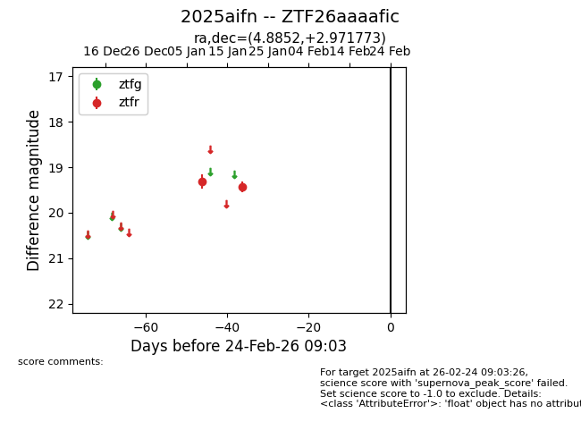
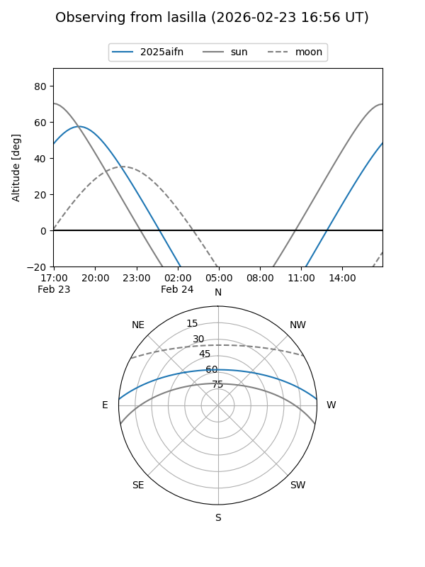
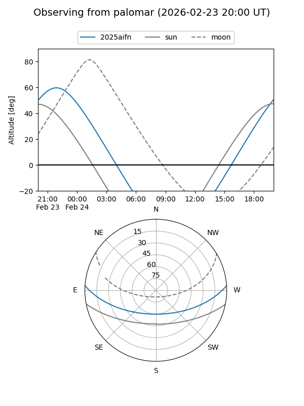

2025aifn
Target 2025aifn at 2026-01-21 03:41
Aliases and brokers:
FINK: link
Lasair: link
ALeRCE: link
TNS: link
YSE: link
alt names
ZTF26aaaafic (ztf,fink_ztf)
2025aifn (tns,yse)
Coordinates:
equatorial (ra, dec) = 4.8852,+2.97177
equatorial (HMS+DMS) = 00:19:32.46,+02:58:18.38
galactic (l, b) = (107.3591,-58.93218)
Flags:
Photometry:
last ztfr=19.43
2 ztfr detections
Lightcurve

Visibility


Additional plots